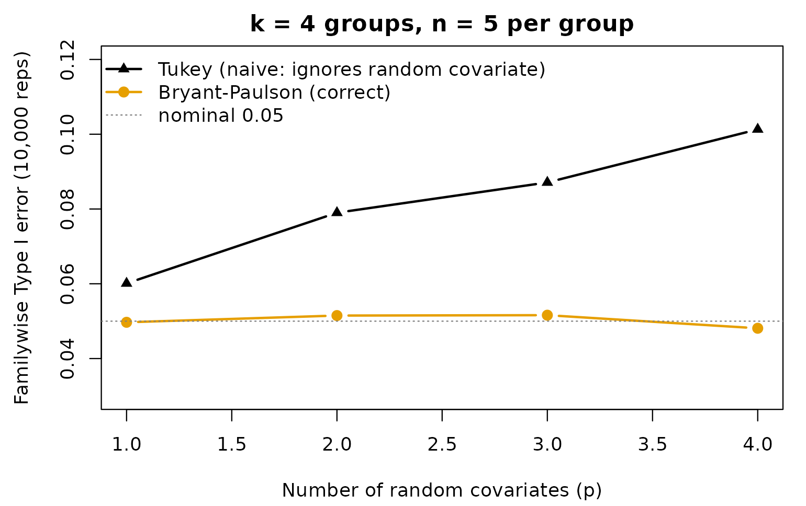

Critical Values for ANCOVA Multiple Comparisons: cv_bryant_paulson()
Ken Kelley
2026-07-31
Source:vignettes/cv_bryant_paulson.Rmd
cv_bryant_paulson.RmdWhen you compare covariate-adjusted means in an
ANCOVA, what is the right critical value? In nearly every real ANCOVA
the covariate is random (measured, not fixed by
design), and the ordinary Tukey studentized-range value no longer
controls the familywise error rate. cv_bryant_paulson()
supplies the critical value that does: it is the analysis-of-covariance
member of DMAR’s critical-value family (cv_t(),
cv_z(), cv_tukey_hsd(),
cv_scheffe(), cv_dunnett(),
cv_smm()). This vignette shows (1) how to use it, (2) that
it reproduces the published Bryant–Paulson values exactly, and (3) via a
10,000-replication simulation, that it holds the familywise error rate
at its nominal level where the ordinary Tukey value does not.
The two source papers. The method comes from two papers. Bryant and Paulson (1976) derived the distribution of the generalized studentized range (their Eq. 17), gave the simultaneous confidence interval (their Eq. 8), and tabulated the single-step critical values (their Table 1). Bryant and Bruvold (1980) showed the same distribution holds when the covariates are not identically distributed across groups, added the stepwise Duncan multiple-range extension (their Table 2), and gave the controlled-test-market worked example. DMAR reproduces both tables directly from the distribution function.
Why this fills a real gap. Maxwell, Delaney, and
Kelley (2027, Ch. 9) discuss the Bryant–Paulson approach as the correct
treatment when the covariate is a random effect. Most major statistical
packages, including R, do not compute this quantity natively, so
researchers typically fall back on the standard Tukey adjustment.
cv_bryant_paulson() and ci_c_ancova_bp()
supply exactly that computation.
1. Basic Use
The call mirrors cv_tukey_hsd(), with one extra
argument, the number of random covariates.
# Six groups, one covariate, 14 error degrees of freedom, alpha = .05.
cv_bryant_paulson(alpha_level = .05, df = 14, groups = 6, covariates = 1)| term | value | area_less | area_greater |
|---|---|---|---|
| upper_cv | 4.83 | 0.95 | 0.05 |
The returned value, 4.83, is the Bryant–Paulson critical
value on the studentized-range scale, exactly the number Bryant and
Bruvold (1980) use in their worked example. area_less and
area_greater are the lower and upper tail areas of the
Bryant–Paulson distribution at that value (here 0.95 and 0.05, as they
must be for a 95% critical value).
How It Relates to Tukey’s HSD
With no covariates the procedure is ordinary Tukey,
so cv_bryant_paulson() reduces to
cv_tukey_hsd() (up to the documented
scale difference: cv_tukey_hsd() reports on the pairwise
mean-difference scale, cv_bryant_paulson() on the
studentized-range scale).
c(bp_p0 = cv_bryant_paulson(.05, df = 14, groups = 6, covariates = 0)$value,
tukey = sqrt(2) * cv_tukey_hsd(.05, df = 14, groups = 6)$value)
#> bp_p0 tukey
#> 4.638538 4.638538Each covariate you add raises the critical value, because the covariate adjustment must be estimated and that estimation adds uncertainty:
sapply(0:3, function(p)
cv_bryant_paulson(.05, df = 14, groups = 6, covariates = p, verbose = FALSE)$value)
#> [1] 4.638538 4.829856 5.013824 5.191221Duncan Multiple-Range Version
Bryant and Bruvold (1980) tabulate the stepwise Duncan
significant ranges (their Table 2). Request them with
procedure = "duncan":
cv_bryant_paulson(.05, df = 14, groups = 6, covariates = 1, procedure = "duncan")| term | value | area_less | area_greater |
|---|---|---|---|
| upper_cv | 3.5 | NA | NA |
2. It Reproduces the Published Tables
The implementation is validated against both source papers.
Bryant & Paulson (1976) Table 1: The Original Single-Step Values
The single value Bryant and Bruvold (1980, Section 3) quote from this table is :
cv_bryant_paulson(.05, df = 14, groups = 6, covariates = 1, verbose = FALSE)$value
#> [1] 4.829856More thoroughly, cv_bryant_paulson() reproduces the full
Table 1. Here we check it against a handful of values read directly from
the printed 1976 table, spanning all three covariate counts and both
error rates:
# (p, alpha, nu, k, printed value) read by hand from Bryant & Paulson (1976) Table 1
anchors <- data.frame(
p = c(1,1,2,2,3,3), alpha = c(.05,.01,.05,.01,.05,.01),
nu = c(20,8,6,14,8,12), k = c(3,4,4,2,8,2),
printed = c(3.67, 6.74, 5.87, 4.56, 6.83, 4.94))
anchors$cv_bryant_paulson <- with(anchors, mapply(function(p,a,nu,k)
cv_bryant_paulson(a, df = nu, groups = k, covariates = p, verbose = FALSE)$value,
p, a = alpha, nu, k))
anchors
#> p alpha nu k printed cv_bryant_paulson
#> 1 1 0.05 20 3 3.67 3.674486
#> 2 1 0.01 8 4 6.74 6.737352
#> 3 2 0.05 6 4 5.87 5.865782
#> 4 2 0.01 14 2 4.56 4.555242
#> 5 3 0.05 8 8 6.83 6.825077
#> 6 3 0.01 12 2 4.94 4.937527Agreement is exact across the whole table, including the
small-
corner. At
the error integral uses stats::ptukey; below that
ptukey’s algorithm loses accuracy (at
,
by about
in probability, enough to move the critical value by
,
and more at
),
so qbryant_paulson() evaluates the studentized-range
distribution directly instead. It therefore reproduces the original
Bryant and Paulson (1976) values even at
and
(for example their
corner values
and
),
which a large-scale simulation of the statistic confirms. With
covariates = 0 the distribution is the ordinary studentized
range, so the table reduces to Tukey’s, a check the package tests
confirm against qtukey().
Bryant & Bruvold (1980) Table 2: The Duncan Multiple-Range Values
Their Section 4 Duncan example reports least significant ranges , where with blocks and . We recover them to the paper’s tabled precision, with coming out to 0.201 against their 0.202 (a rounding difference in the last digit, within their stated tolerance):
scale <- sqrt(0.01326) / sqrt(4)
R <- sapply(2:6, function(k)
scale * cv_bryant_paulson(.05, df = 14, groups = k, covariates = 1,
procedure = "duncan", verbose = FALSE)$value)
round(setNames(R, paste0("R", 2:6)), 3)
#> R2 R3 R4 R5 R6
#> 0.181 0.190 0.195 0.199 0.201(cv_bryant_paulson() reproduces the complete Bryant
& Bruvold Table 2 to the tabled two-decimal precision, spot-checked
against published values in the package tests.)
3. Why It Matters: A 10,000-Replication Simulation
Does using the correct critical value actually change the
error rate? We simulate balanced one-way ANCOVA data under the
null hypothesis that all adjusted population means are equal
(the covariates affect the outcome, the groups do not), and ask how
often the all-pairwise comparison procedure makes at least one
false rejection, the familywise Type I error rate, which should equal
alpha.
Two procedures are compared, identical except for the critical value:
-
Bryant–Paulson:
cv_bryant_paulson()(accounts for the random covariate); -
Tukey (naive): the ordinary studentized range,
sqrt(2) * cv_tukey_hsd(), applied to the adjusted means as if the covariate were fixed.
A fast closed-form one-way ANCOVA (algebraically identical to
lm()) keeps the 10,000 replications quick.
fast_ancova <- function(y, g, X) {
X <- as.matrix(X); k <- nlevels(g); N <- length(y); p <- ncol(X)
yc <- y - ave(y, g); Xc <- X
for (j in seq_len(p)) Xc[, j] <- X[, j] - ave(X[, j], g)
b <- solve(crossprod(Xc), crossprod(Xc, yc))
s <- sqrt(sum((yc - Xc %*% b)^2) / (N - k - p))
gm <- as.numeric(tapply(y, g, mean))
Xbar_g <- vapply(seq_len(p), function(j) as.numeric(tapply(X[, j], g, mean)),
numeric(k))
adj <- gm - as.numeric(sweep(matrix(Xbar_g, nrow = k), 2, colMeans(X), "-") %*% b)
list(adj = adj, s = s)
}The familywise Type I error of an all-pairwise procedure with
per-mean critical value cv (on the studentized-range scale)
is the probability that the observed generalized range
exceeds cv.
sim_fwe <- function(reps, k, n, p, alpha = .05, sigma = 1, beta = 0.5) {
g <- factor(rep(seq_len(k), each = n)); N <- k * n; nu <- N - k - p
cv_bp <- cv_bryant_paulson(alpha, df = nu, groups = k, covariates = p,
verbose = FALSE)$value
cv_tk <- sqrt(2) * cv_tukey_hsd(alpha, df = nu, groups = k)$value
Q <- numeric(reps)
for (r in seq_len(reps)) {
X <- matrix(rnorm(N * p), N, p)
y <- as.numeric(X %*% rep(beta, p)) + rnorm(N, 0, sigma) # H0: no group effect
f <- fast_ancova(y, g, X)
Q[r] <- diff(range(f$adj)) / (f$s * sqrt(1 / n))
}
data.frame(k, n, p, nu,
fwe_bryant_paulson = mean(Q > cv_bp),
fwe_tukey_naive = mean(Q > cv_tk))
}
REPS <- 10000
design <- rbind(data.frame(k = 4, n = 5, p = 1:4),
data.frame(k = 4, n = 8, p = 1:4),
data.frame(k = 6, n = 10, p = c(1, 3)))
results <- do.call(rbind, Map(function(k, n, p) sim_fwe(REPS, k, n, p),
design$k, design$n, design$p))
results
#> k n p nu fwe_bryant_paulson fwe_tukey_naive
#> 1 4 5 1 15 0.0497 0.0601
#> 2 4 5 2 14 0.0515 0.0790
#> 3 4 5 3 13 0.0516 0.0871
#> 4 4 5 4 12 0.0481 0.1013
#> 5 4 8 1 27 0.0529 0.0594
#> 6 4 8 2 26 0.0480 0.0608
#> 7 4 8 3 25 0.0505 0.0711
#> 8 4 8 4 24 0.0552 0.0833
#> 9 6 10 1 53 0.0468 0.0509
#> 10 6 10 3 51 0.0557 0.0652
mc_se <- sqrt(0.05 * 0.95 / REPS)
cat(sprintf("Nominal alpha = 0.05; Monte Carlo SE ~ %.4f (%d reps)\n\n", mc_se, REPS))
#> Nominal alpha = 0.05; Monte Carlo SE ~ 0.0022 (10000 reps)
cat(sprintf("Bryant-Paulson familywise error: mean %.4f (range %.4f-%.4f)\n",
mean(results$fwe_bryant_paulson),
min(results$fwe_bryant_paulson), max(results$fwe_bryant_paulson)))
#> Bryant-Paulson familywise error: mean 0.0510 (range 0.0468-0.0557)
cat(sprintf("Tukey (naive) familywise error: mean %.4f (range %.4f-%.4f)\n",
mean(results$fwe_tukey_naive),
min(results$fwe_tukey_naive), max(results$fwe_tukey_naive)))
#> Tukey (naive) familywise error: mean 0.0718 (range 0.0509-0.1013)
# Source the two data colors from DMAR's own colorblind-safe palette engine.
pal <- unname(grDevices::palette.colors(2))
col_tk <- pal[1]
col_bp <- pal[2]
sub <- results[results$k == 4 & results$n == 5, ]
op <- par(mar = c(4.2, 4.4, 2, 1))
plot(sub$p, sub$fwe_tukey_naive, type = "b", pch = 17, col = col_tk, lwd = 2,
ylim = c(0.03, 0.12), xlab = "Number of random covariates (p)",
ylab = "Familywise Type I error (10,000 reps)",
main = "k = 4 groups, n = 5 per group")
lines(sub$p, sub$fwe_bryant_paulson, type = "b", pch = 19, col = col_bp, lwd = 2)
abline(h = 0.05, col = "grey50", lty = 3)
legend("topleft", bty = "n",
legend = c("Tukey (naive: ignores random covariate)",
"Bryant-Paulson (correct)", "nominal 0.05"),
col = c(col_tk, col_bp, "grey50"),
pch = c(17, 19, NA), lty = c(1, 1, 3), lwd = c(2, 2, 1))
par(op)Reading the results.
cv_bryant_paulson() holds the familywise error at the
nominal 0.05 across every design. The naive Tukey value lets it drift
upward, to roughly 10% with four covariates on five observations per
group, double the intended rate. The gap widens as covariates are added
and as the error degrees of freedom shrink, exactly the regime (small
samples, several covariates) where careful inference matters most.
Is it exact? Yes. The Bryant–Paulson critical value is the exact upper- quantile of the exact finite-sample distribution of the studentized range of adjusted means (Bryant & Paulson, 1976), computed by numerical integration whose error (well below , and far below the two-decimal precision of the published tables) is negligible. So when the model assumptions hold and the design is balanced, the familywise Type I error rate equals the nominal exactly, not asymptotically. The 10,000 replications above confirm this within Monte Carlo error; a focused 200,000-replication run at a single balanced cell (, , one covariate) gives an empirical familywise error of 0.05012 against a nominal 0.05000 (within one Monte Carlo standard error), while the naive Tukey value gives 0.05489 (ten standard errors high). For unbalanced designs the Tukey–Kramer standard error makes the pairwise procedure slightly conservative (coverage at least ), and the all-contrasts “allowance” form is conservative for complex contrasts.
4. A Complete Worked Analysis
Finally, the end-to-end workflow a user would follow, from data to
simultaneous intervals, on the Bryant–Bruvold test_market
data.
data(test_market)
# Randomized-block ANCOVA: panel (treatment), block, and the random covariate.
fit <- lm(brand_movement ~ panel + block + category_movement, data = test_market)
s_ancova <- summary(fit)$sigma
nu <- fit$df.residual
# Adjusted panel means at the covariate grand mean.
xbar <- mean(test_market$category_movement)
adj <- vapply(levels(test_market$panel), function(p) {
nd <- data.frame(panel = factor(p, levels = levels(test_market$panel)),
block = factor(1:4, levels = levels(test_market$block)),
category_movement = xbar)
mean(predict(fit, nd))
}, numeric(1))
# The critical value for the family of comparisons ...
cv_bryant_paulson(alpha_level = .05, df = nu, groups = 6, covariates = 1)| term | value | area_less | area_greater |
|---|---|---|---|
| upper_cv | 4.83 | 0.95 | 0.05 |
# ... and the simultaneous 95% intervals built from it (s = 4 blocks => n = 4).
ci_c_ancova_bp(adj_means = adj, s_ancova = s_ancova, n = 4,
num_covariates = 1, df = nu)| contrast | estimate | lower_limit | upper_limit |
|---|---|---|---|
| group_1 - group_2 | -0.0243 | -0.302 | 0.254 |
| group_1 - group_3 | -0.507 | -0.785 | -0.228 |
| group_1 - group_4 | -0.92 | -1.2 | -0.642 |
| group_1 - group_5 | -1.02 | -1.3 | -0.745 |
| group_1 - group_6 | -1.28 | -1.56 | -1 |
| group_2 - group_3 | -0.482 | -0.76 | -0.204 |
| group_2 - group_4 | -0.896 | -1.17 | -0.618 |
| group_2 - group_5 | -0.998 | -1.28 | -0.72 |
| group_2 - group_6 | -1.26 | -1.53 | -0.978 |
| group_3 - group_4 | -0.413 | -0.691 | -0.135 |
| group_3 - group_5 | -0.516 | -0.794 | -0.238 |
| group_3 - group_6 | -0.774 | -1.05 | -0.496 |
| group_4 - group_5 | -0.103 | -0.381 | 0.175 |
| group_4 - group_6 | -0.361 | -0.639 | -0.0827 |
| group_5 - group_6 | -0.258 | -0.536 | 0.02 |
Confidence level: 95%
Each pairwise interval has the half-width reported in the paper; intervals excluding zero flag the panel pairs whose adjusted means differ, with familywise protection at the nominal level.
References
Bryant, J. L., & Paulson, A. S. (1976). An extension of Tukey’s method of multiple comparisons to experimental designs with random concomitant variables. Biometrika, 63, 631–638.
Bryant, J. L., & Bruvold, N. T. (1980). Multiple comparison procedures in the analysis of covariance. Journal of the American Statistical Association, 75(372), 874–880.
Maxwell, S. E., Delaney, H. D., & Kelley, K. (2027). Designing experiments and analyzing data: A model comparison perspective (4th ed.). Routledge.